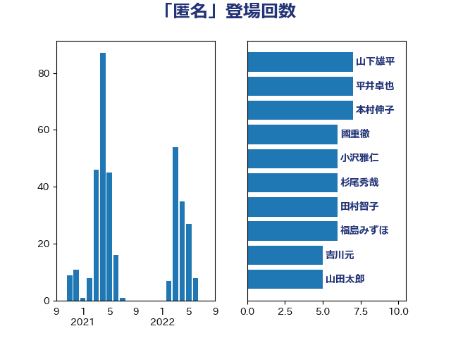

単語「匿名」

| 山下雄平 | 自由民主党 | 7 回 |
| 平井卓也 | 自由民主党 | 7 回 |
| 本村伸子 | 日本共産党 | 7 回 |
| 國重徹 | 公明党 | 6 回 |
| 小沢雅仁 | 立憲民主党 | 6 回 |
| 杉尾秀哉 | 立憲民主党 | 6 回 |
| 田村智子 | 日本共産党 | 6 回 |
| 福島みずほ | 社会民主党 | 6 回 |
| 吉川元 | 立憲民主党 | 5 回 |
| 山田太郎 | 自由民主党 | 5 回 |
| 後藤茂之 | 自由民主党 | 5 回 |
| 前川清成 | 日本維新の会 | 4 回 |
| 吉田統彦 | 立憲民主党 | 4 回 |
| 守島正 | 日本維新の会 | 4 回 |
| 武田良太 | 自由民主党 | 4 回 |
| 田村憲久 | 自由民主党 | 4 回 |
| 芳賀道也 | 国民民主党 | 4 回 |
| 鈴木義弘 | 国民民主党 | 4 回 |
| 音喜多駿 | 日本維新の会 | 4 回 |
| 伊藤岳 | 日本共産党 | 3 回 |
| 塩川鉄也 | 日本共産党 | 3 回 |
| 平木大作 | 公明党 | 3 回 |
| 斎藤洋明 | 自由民主党 | 3 回 |
| 末松信介 | 自由民主党 | 3 回 |
| 藤巻健太 | 日本維新の会 | 3 回 |
| 伊藤孝恵 | 国民民主党 | 2 回 |
| 嘉田由紀子 | 無所属 | 2 回 |
| 後藤祐一 | 立憲民主党 | 2 回 |
| 新谷正義 | 自由民主党 | 2 回 |
| 浅田均 | 日本維新の会 | 2 回 |
| 白石洋一 | 立憲民主党 | 2 回 |
| 穀田恵二 | 日本共産党 | 2 回 |
| 萩生田光一 | 自由民主党 | 2 回 |
| 葉梨康弘 | 自由民主党 | 2 回 |
| 藤岡隆雄 | 立憲民主党 | 2 回 |
| 西村康稔 | 自由民主党 | 2 回 |
| 階猛 | 立憲民主党 | 2 回 |
| 三浦信祐 | 公明党 | 1 回 |
| 上田清司 | 国民民主党 | 1 回 |
| 中山展宏 | 自由民主党 | 1 回 |
| 中西祐介 | 自由民主党 | 1 回 |
| 中谷一馬 | 立憲民主党 | 1 回 |
| 串田誠一 | 日本維新の会 | 1 回 |
| 井上信治 | 自由民主党 | 1 回 |
| 仁木博文 | 無所属 | 1 回 |
| 伊藤俊輔 | 立憲民主党 | 1 回 |
| 倉林明子 | 日本共産党 | 1 回 |
| 勝部賢志 | 立憲民主党 | 1 回 |
| 北神圭朗 | 無所属 | 1 回 |
| 古賀友一郎 | 自由民主党 | 1 回 |
| 吉田忠智 | 立憲民主党 | 1 回 |
| 吉良よし子 | 日本共産党 | 1 回 |
| 国定勇人 | 自由民主党 | 1 回 |
| 大口善徳 | 公明党 | 1 回 |
| 安江伸夫 | 公明党 | 1 回 |
| 宮本徹 | 日本共産党 | 1 回 |
| 寺田静 | 無所属 | 1 回 |
| 小野寺五典 | 自由民主党 | 1 回 |
| 山岸一生 | 立憲民主党 | 1 回 |
| 山本左近 | 自由民主党 | 1 回 |
| 山添拓 | 日本共産党 | 1 回 |
| 岸田文雄 | 自由民主党 | 1 回 |
| 川合孝典 | 国民民主党 | 1 回 |
| 川田龍平 | 立憲民主党 | 1 回 |
| 掘井健智 | 日本維新の会 | 1 回 |
| 斎藤アレックス | 国民民主党 | 1 回 |
| 有村治子 | 自由民主党 | 1 回 |
| 松島みどり | 自由民主党 | 1 回 |
| 松沢成文 | 日本維新の会 | 1 回 |
| 柚木道義 | 立憲民主党 | 1 回 |
| 柳ヶ瀬裕文 | 日本維新の会 | 1 回 |
| 森山浩行 | 立憲民主党 | 1 回 |
| 清水真人 | 自由民主党 | 1 回 |
| 清水貴之 | 日本維新の会 | 1 回 |
| 熊田裕通 | 自由民主党 | 1 回 |
| 矢倉克夫 | 公明党 | 1 回 |
| 石川昭政 | 自由民主党 | 1 回 |
| 石橋通宏 | 立憲民主党 | 1 回 |
| 荒井優 | 立憲民主党 | 1 回 |
| 菅義偉 | 自由民主党 | 1 回 |
| 蓮舫 | 立憲民主党 | 1 回 |
| 西岡秀子 | 国民民主党 | 1 回 |
| 高良鉄美 | 無所属 | 1 回 |